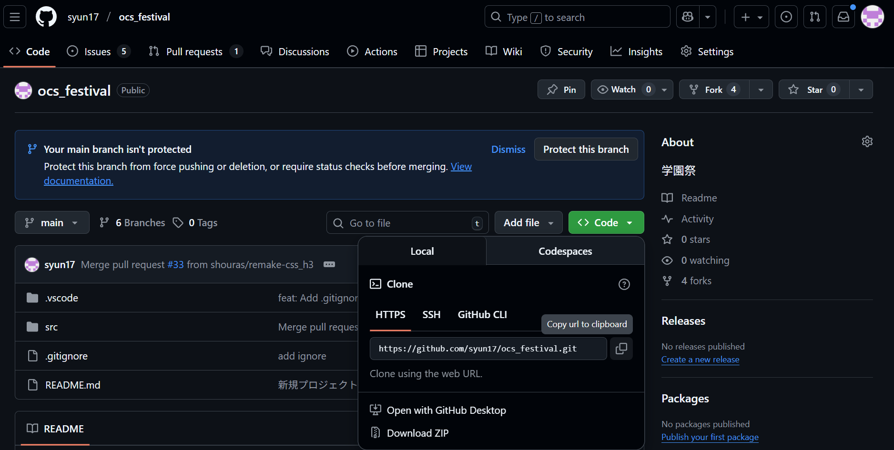
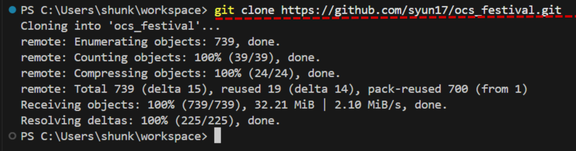
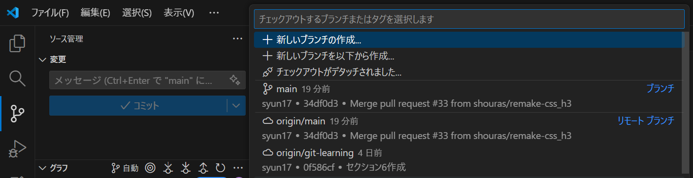
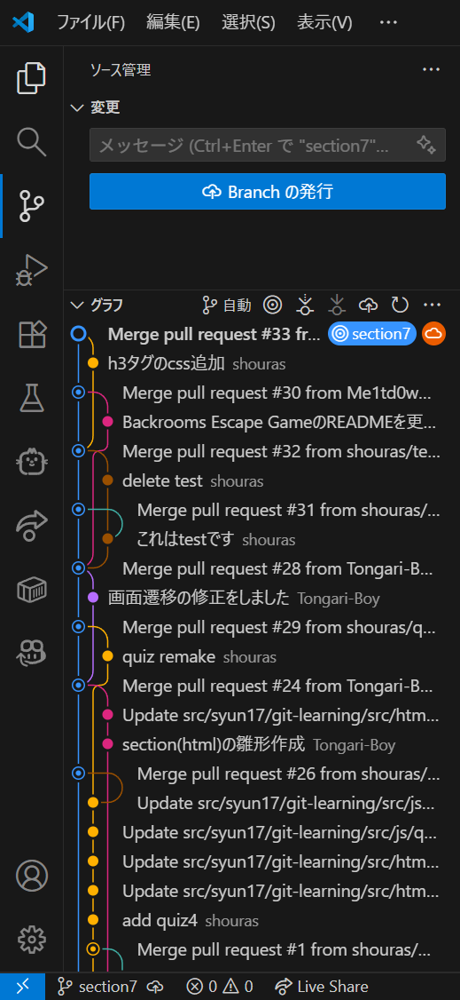
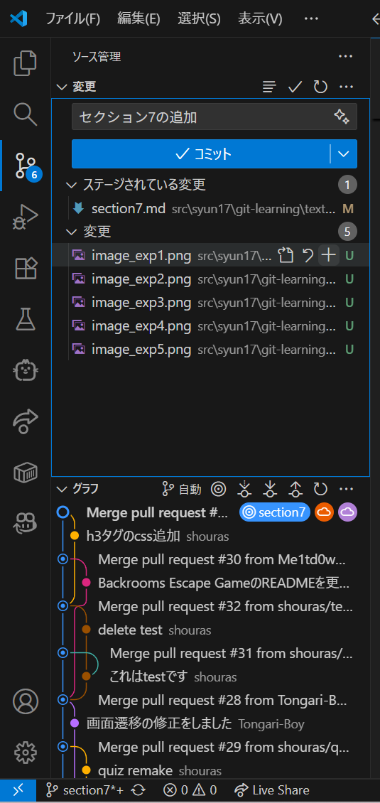
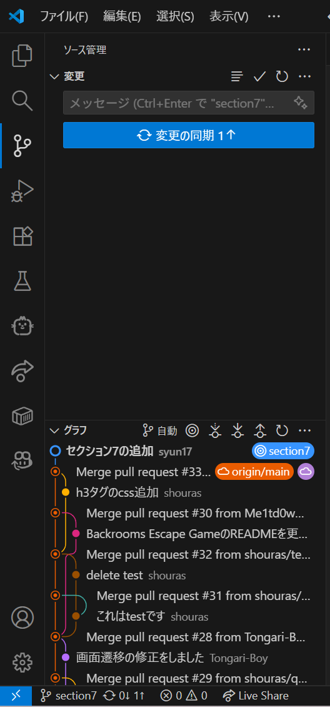
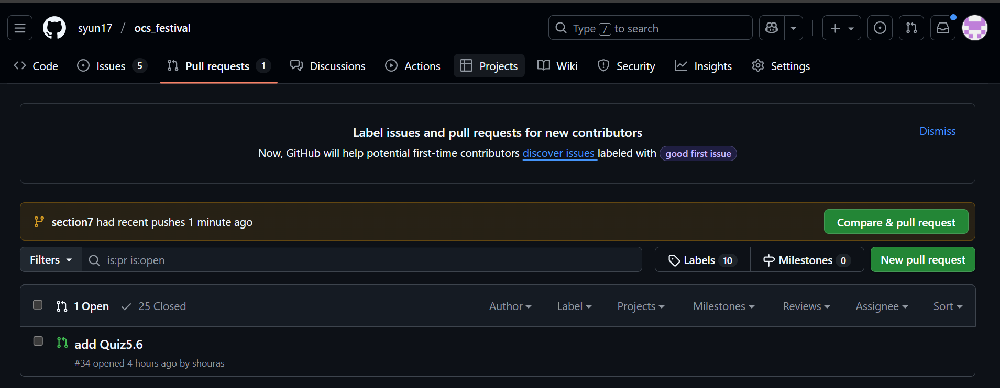
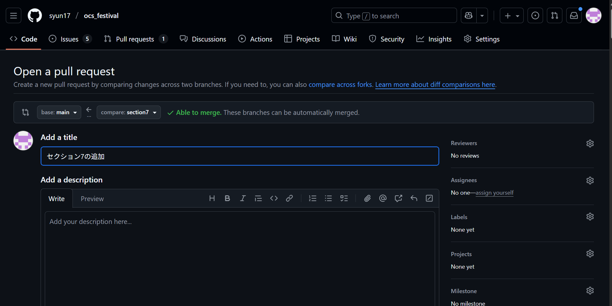
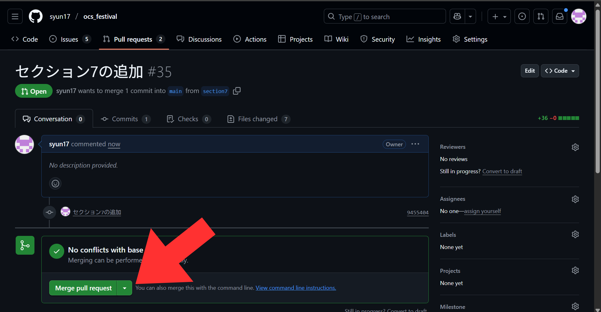
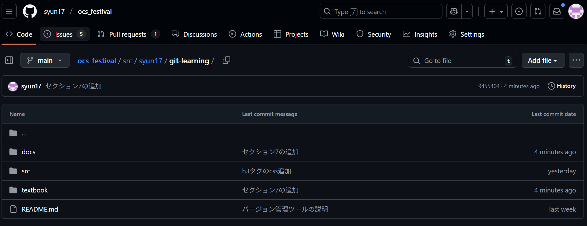

まとめ
clone
GitHubのリモートリポジトリのリンクを取得し、cloneします。
Githubでリンクをコピー

VSCCodeでclone

fetch,pull
VSCode上のソース管理に`fetch`,`pull`,`commit`のボタンがあります。

branch
VSCode上で新しいブランチを作成することができます。

Branchの発行でリモートリポジトリにもbranchを反映させます。

add,commit,push
各ファイルの`+`ボタンでファイルのステージングができます。その後コメントを入力し、`コミット`を押すことでcommitが完了します。

変更の同期を押すことでpushができます

merge
GitHub上でmergeをするためには一度PullRequestを作成します。


その後PullRequestの内容で問題が無ければMergeします。

これで一連の流れは完了です!

最後に
ここまで出来ればgitの理解は充分です!
しかし、使う上でここには出てきていない内容もたくさんあります(環境構築等)。
一人で始めるのは大変なので、サークルに入って一緒にチーム開発をしましょう!